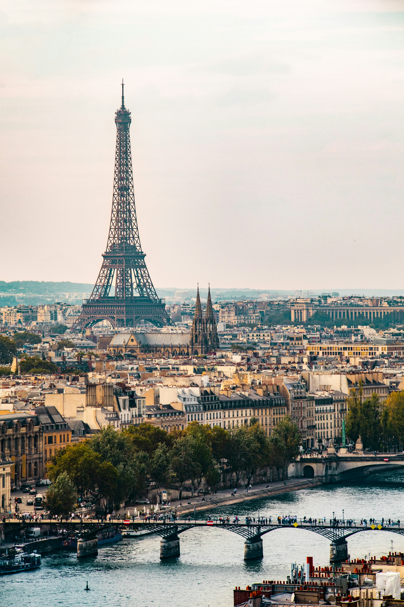

Guias
Como preparar una escapada de fin de semana sin que se te vaya el presupuesto
Una nota principal con mirada de revista para resolver destino, tiempos y gastos sin perder el costado inspiracional del viaje.


Una portada ideal para mostrar una nota larga con peso visual y un tono mas editorial.